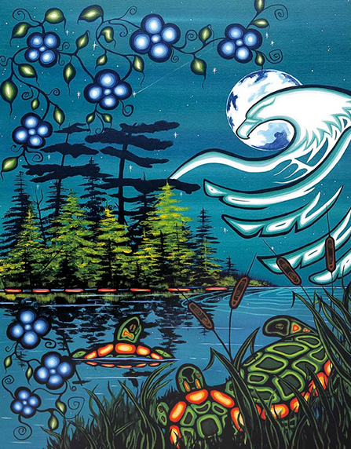

Reflection
Learning about Indigenous storytelling as pedagogy encourages educators to rethink some common assumptions about teaching and learning. Rather than viewing teaching mainly as the delivery of information, storytelling highlights learning as a relational process shaped by listening, reflection, and shared meaning-making. Stories are not simply texts to be used in the classroom; they carry cultural knowledge, values, and responsibilities.
This perspective reminds educators that learning can involve more than acquiring facts. Through storytelling, learners may be invited to consider relationships with people, community, land, and place. Meaning is often developed gradually through reflection and dialogue rather than immediate explanation. For educators, this suggests the importance of patience, humility, and openness in practice.
Reflection on storytelling pedagogy also raises questions of responsibility. Indigenous stories should not be treated merely as classroom materials or decorative additions to curriculum. Educators, especially non-Indigenous educators, need to approach these perspectives with care, respect for cultural context, and a willingness to continue learning.

Questions for Reflection
For Educators
- How can teaching move beyond delivering information toward building relationships?
- What does it mean to listen carefully and respectfully in learning contexts?
- How can educators approach stories as sources of cultural knowledge rather than simple classroom materials?
For Practice
- How can learning environments support reflection, dialogue, and meaning-making?
- What responsibilities do non-Indigenous educators have when engaging Indigenous perspectives?
- How can educators continue learning from communities and through ongoing reflection?
Continuing the Learning
Reflection is an ongoing process rather than a final step. Educators can continue deepening their understanding of Indigenous storytelling and pedagogy through scholarly reading, respectful engagement with community knowledge where appropriate, and ongoing consideration of how teaching practices shape students’ experiences of learning and belonging. Additional sources are listed on the References page.